Codex 시안(검토 13, 커밋 fc22e30)의 ① 안을 실제 게임 코드에 옮겼습니다. 게임 상태·채점·움직임은 그대로이고 배치 스타일만 바뀌었습니다. 아래는 실제 게임에서 찍은 화면입니다.
| 항목 | 실측(1280px) |
|---|---|
| 전투 무대 높이 | 일반 적 180px · 3층 여우 보스 198px |
| 본문 | 시작 y248 · 폭 588px · 글자 18px |
| 인물 | 일반 128px · 여우 160px(정수 배율 그대로) |
| 카드 · 낱말 | 2×2 · 노트북 6열 / 휴대폰 3열 |
| 가로 넘침 | 1280·390px 모두 없음 |
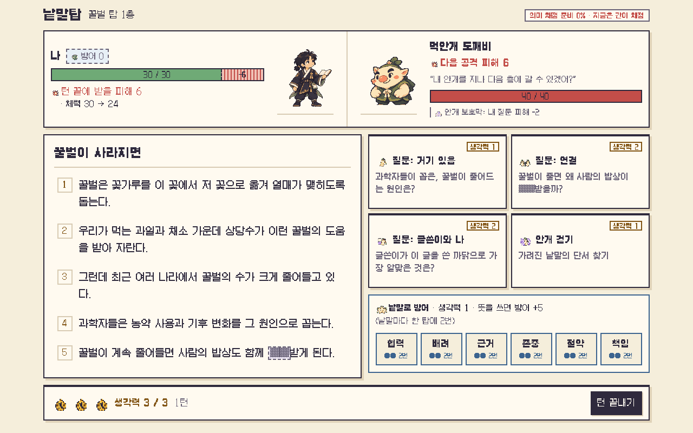
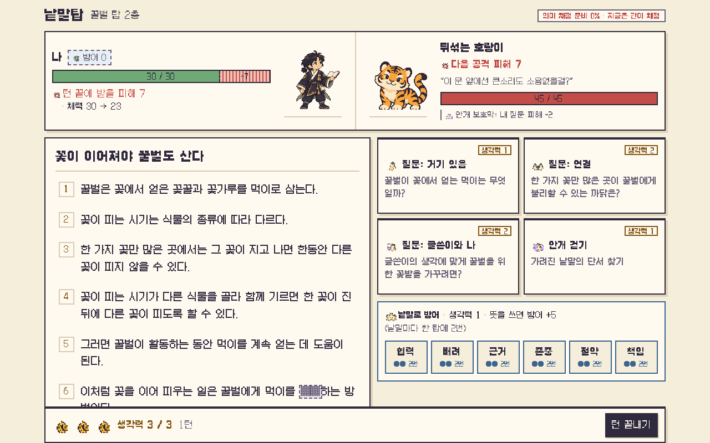
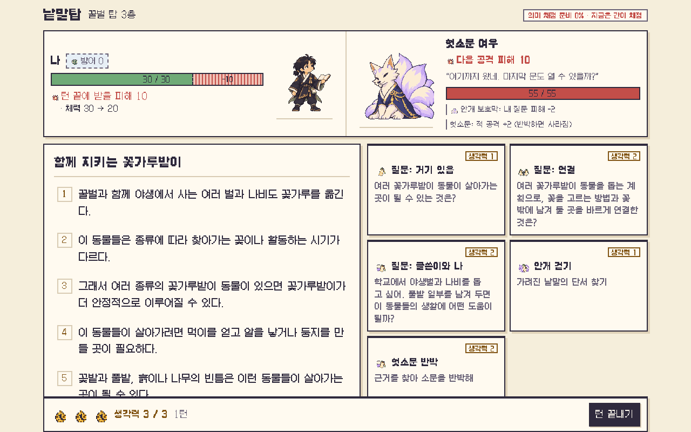
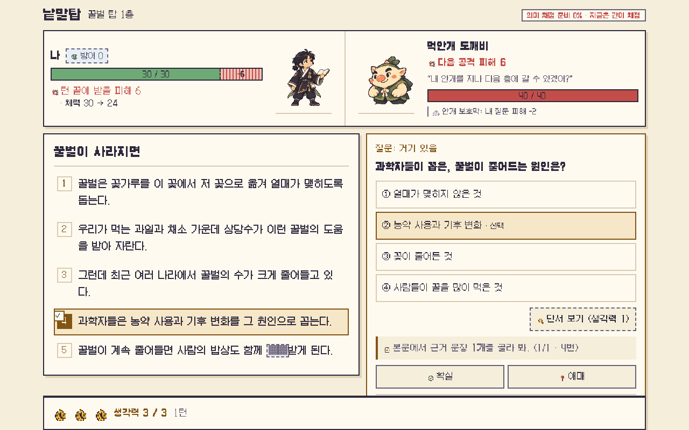
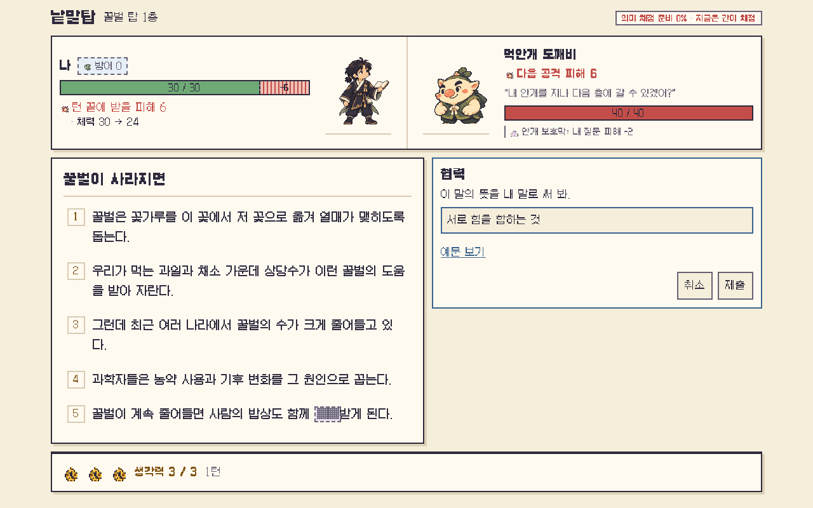
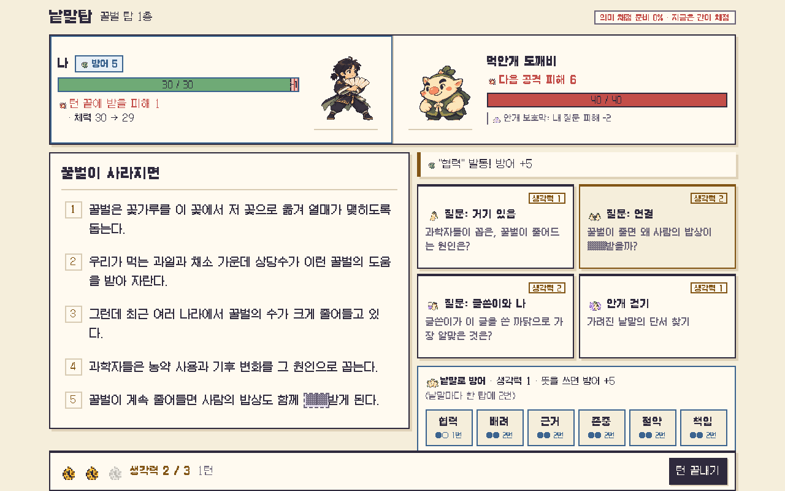
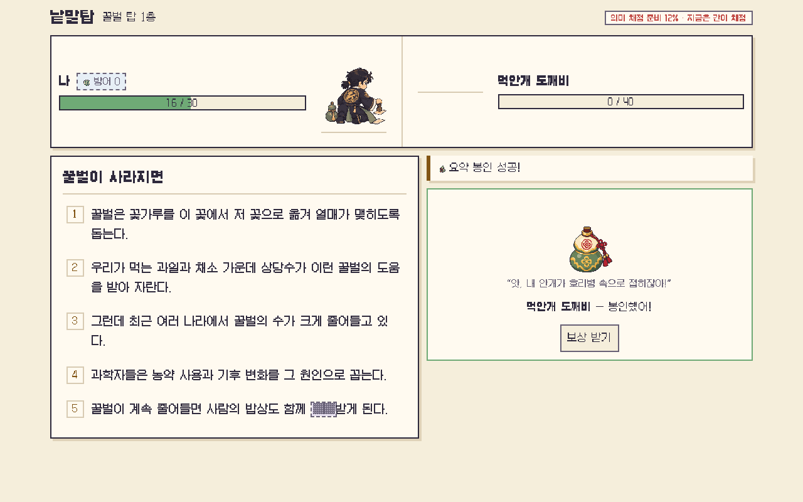
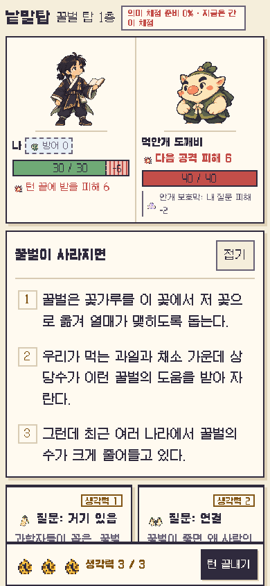
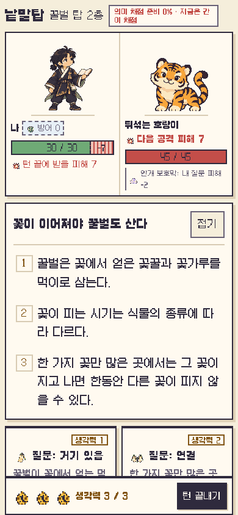
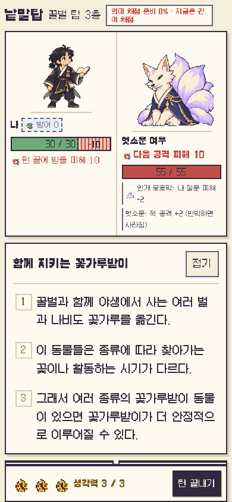
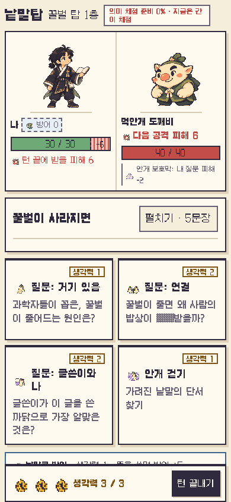
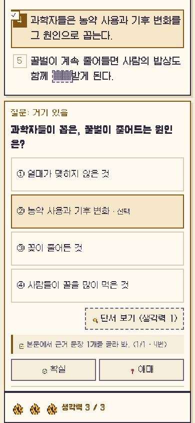
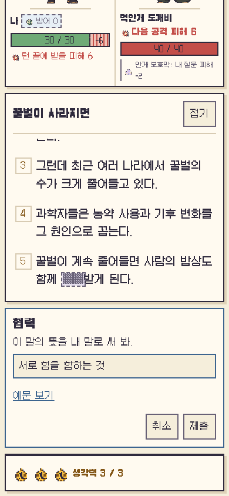
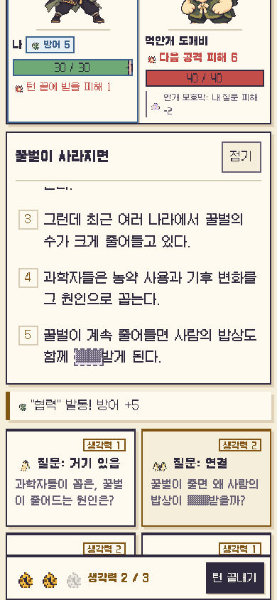
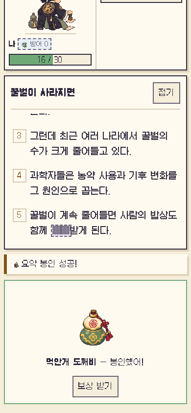
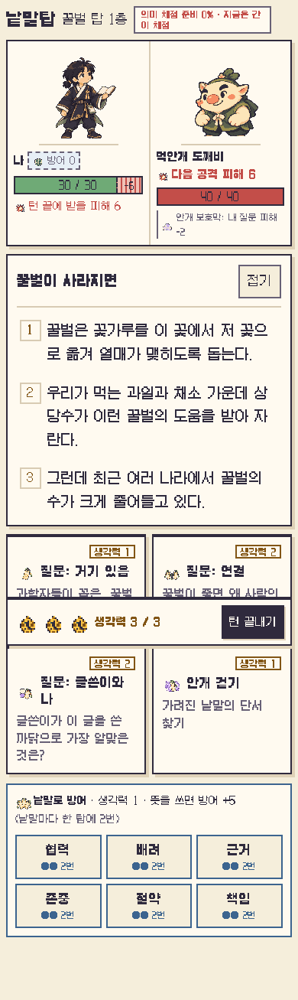